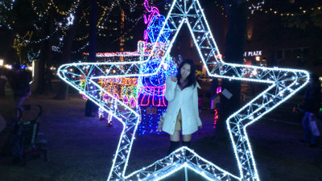
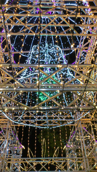
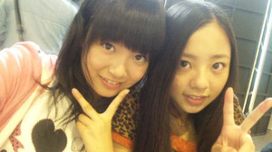
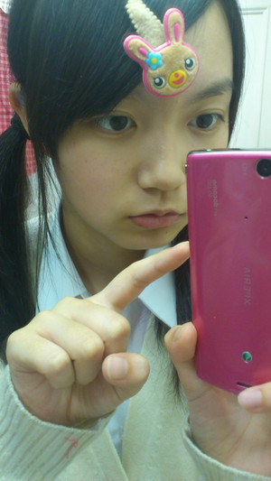
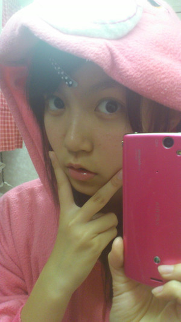

こんばんはーひめたんです☆
乃木坂46 in 大阪ーっ＼(`・・')／
乃木坂のみんなも、
会いに来てくださったみなさんも、
お疲れ様でございました
いいなぁ。大阪いいなぁ。
ひめたん前にね、車で大阪行ったことあるんよw(°O°)w
ある日ぱぱとままが
「ドライブしよー♪」って行って、めっちゃ車走らせるなぁって思ったら
気が付いたら大阪着いてたの!!!びっくりだよねー
たこ焼き食べたー
蓬莱５５１の豚まん食べたー
りくろーおじさんのチーズケーキ食べたー
ひめたんタコ嫌いだから、たこ焼きのタコは抜きました(∀)←
ごめーんねっ
でもめっちゃ美味しかったです♪♪
それから、大阪といえば
乃木坂46メンバーオーディション２次審査の会場!!!
ひめたんは面接とか苦手なので、実は２次審査が１番自信なくってー('・ω・`)
それからＮＭＢ48さんの地元ですねっ
それからさゆりんごちゃん(松村沙友理chan)なーちゃん(西野七瀬chan)
ろってぃー(川村真洋chan)の地元ー☆★
たしかべびたん(伊藤万理華chan)も大阪うまれのはず!
関西弁めっちゃ可愛い
ひめたんも関西弁でお話ししたくなりますー
せやけど、ひめたんは広島弁を忘れへんよー？
...ごめんなさいジョークです('・ω・`)
わら
みなさまこめんと返しのお時間でございます!
 自撮り難しいと思うけど、頑張ってね(^^)v
自撮り難しいと思うけど、頑張ってね(^^)v
私服姿もみたいな♪
ありがとーうございます★
ひめたんいっつも制服や部屋着で過ごす人だけど
機会があったら写メアップしますねー!ご指摘お願いします＼(∀)／
あれ～ひめたんって「わら」って使っていたっけ？(笑)
誰の影響かな？
誰の影響というより最近の気分かな♪
ひめたんメールでめっちゃ「わら」ってるんですよ
音楽係ってなにするの？
音楽の授業のあとで先生に授業評価を聞くってゆー
決してそんな特別な係ではないです(ω)わら
早く福岡に来てね！12月10日来てくれると嬉しいなあ。
んー福岡行きたいっ
12/10に行けるかはわからないけど、
早く福岡のみなさんに会えるよう頑張ります!
その時はひめたんに会いに来てねっ(∀)きゃは★
この際、乃木坂４６は「すっぴんアイドルグループ」として活動して行ったらどうだろ？
（一部から猛反発あるかもｗ）
みんなは素でも全然可愛いから問題ないけれどもー
ひめたんが恥ずかしいのでやめておきます(*/ω＼*)
ちなみに今日のひめたんは
広島でイベントの自主練とかしながらお留守番してました(`・・)ゞ
夜はままとショッピングして、イルミネーションみたーよ
イルミネーションはふら～と立ち寄っただけだから、
またゆっくり見る機会があったら報告しますね♪
 
ひめたん
テスト帰ってきたーあw(°O°)w
ごめんなさい早まりましたひめたんです。
テストの結果を気にしてくださった方へ報告ー
国語…(^^)
社会…(^^)
音楽…(^^)
保体…(^^)
美術…(^^)
理科…('`)
技家…('`)
英語…(ω)
「あれ数学はー？」
って質問は受け付けないのでご注意下さいっ
英語のこの子→(ω)
どっちだよって顔してるけど許してあげて下さい
わら
お待たせしました質問返しー!
ちなみにひめかってどういう意味でつけられた名前なの?
４月１３日の晴れた日に生まれたんですよ(^^)ままが病室の窓を開けたら...
お日さまがぽかぽかしてて、新芽とお花のいい香りがしてたって♪
すごい目が大きいと感じるのは気のせいかな？
ほんとですかー？見つめられると恥ずかしいので反らします(*/ω＼*)ぷ
気のせいじゃないといいなあっ♪♪
ひめたんの文章ってすごく乙女な感じするよ
乙女って死語？
乙女さんだってよー(o>ω<o)もっと言ってくださーい♪♪
わら
ところで死語って何ですかー？
俺、ひめたんの６つ上だけど大丈夫かな？ｗ
間に合うかな？ｗ
おじさんじゃないかな？ｗ
お兄さんに歳なんか関係ないない!
ひめたんなんか年下メンバーに
「来年高校生ー?想像できなーい!!」って言われちゃうくらいですもん('・∀・`)
携帯２台持ちかいの？
それが、写メに登場するスマホはひめたんのじゃないんよーお
ままのなんだけど、画質がいいけぇ写メ撮るときだけ借りてます!
同じ機種ー♪って喜んでくれた方ー？
ひめたんままが、同じだね★って言ってたよ(ω)
ひめたんシャンプーとかって
なにつかってるのーっ？
今はＳＡＬＡ使ってる♪
何かいいやつあったら教えて下さーい＼(^^)／
もしや三姉妹そろって部屋着は着ぐるみ?
んーm('・・)m
中元家にはもう1匹むらさきのくまさんがいまーすよ☆★
でもね、その正体はヒミツなのです。わら
ひめかちゃんはメンバーだと誰と仲良いの？(^-^)
みんな仲良しですよー♪全員とメアド交換しましたもん∩^ω^∩
んー１番始めに仲良くなったのはろってぃー(川村真洋chan)
ろってぃーは唯一、乃木坂受かる前から知り合いだったりする。
乃木坂メンではじめて一緒にお泊まりしたのも、ろってぃーだったりする。
まま同士も仲良しだったりする。
ろってぃー!
明日のイベントもふぁいとっ(*^^*)
大阪行くみーんなふぁいとっ

ひめたん
３年４組の中元日芽香です。音楽係やってます。
みんなからはひめたんって呼ばれています。
よろしくお願いします☆
教卓の前で自己紹介したくなったあ(*/ω＼*)わら
今日はお友達と一緒に学校行ってて、
間に合わないかもなー。遅刻するかなー？
って思ったら意外にあっさり学校着けてちょっとツイてた1日でした∩^ω^∩
みにコメ返たいーむ☆★
レッスンとか仕事がある時、ひめたんはどんなスケジュールで動いているの？ざっくりでいいので教えて。
移動中の楽しみって何ですか？
広島からの移動は大変だね。新幹線の車内では何をしてるのかな？
広島から通ってるんだ？いわゆる新幹線通勤？大変そうや！
広島ー東京ってどのくらいかかるの？？
はいいー(o^^)/広島～東京間は片道
飛行機→1時間20分（広島市内～空港まで＋1時間位かかります）、新幹線→3時間50分、夜行バス→12時間
で到着します★☆
移動時間の半分は寝ちゃう(笑)それから音楽聴いたり、お勉強したり。
帰りはまあや(和田まあやchan)なーちゃん(西野七瀬chan)とわいわいおしゃべり…
かと思いきやこちらも３人で仲良く寝ております(ω)わら
んー大変ってよりも、移動も含めて全部楽しませていただいてますっ♪
学校のお友達から「東京行くなんてうらやましいー!」なんて言われるほど(^^)
ざっくり...
◎土曜日
広島出発→到着→レッスンorお仕事→みんなとご飯→
なーちゃん・まあや・ひめたんお泊まり♪
◎日曜日
起床・準備→レッスンorお仕事→帰宅
日曜日は朝から夜までフルで動いておりますっ(`・・)ゞ
土曜日の夜は楽しいですよーお!
（ちなみにバスの時は金曜日の夜からスタートしてます。）
残りの質問はまた明日...☆★
あ!
広島、夕方地震がありました。
一部の地域では強い揺れもあったみたいで...広島県民のみなさん、大丈夫でしたか？
ひめたんは無事です!心配して下さった方、ありがとうございました♪

撮れちゃった
わら
ひめたん
こんばんはひめたんですこんばんはーあ♪
学校お仕事お疲れ様でございますっ(`・・)ゞ
コメ返は近々まとめてさせて下さいませ☆★
いつも本当にありがとうございますっ!
たくさんのぱぱままお兄ちゃんお姉ちゃんファンのみなさまに支えられて
ひめたんは今日も幸せです∩^ω^∩
今日も元気ですよー
今日も写メ載せちゃうよ♪
...て鏡見たら
すっぴんっ
とゆーのもね、
ひめたん基本すっぴんなの毎日←
でも自撮りは練習しなきゃ上手になれないもんね
せっかくみなさんが応援して下さってるんだもんね
よしっ!
メイクしてないけど
撮っちゃお貼っちゃお!!!

恥ずかしいので目眩まし(//ω//)
ケアベアちゃんの方が可愛く撮れてるじゃん!!
ちなみに部屋着です...
ひめたん
{kind=link}
{kind=link}
{kind=link}
{kind=link}
{kind=link}
{kind=link}
{kind=link}
{kind=link}
{kind=link}
{kind=link}
{kind=link}
{kind=link}
{kind=link}
{kind=link}
{kind=link}
{kind=link}
{kind=link}
{kind=link}